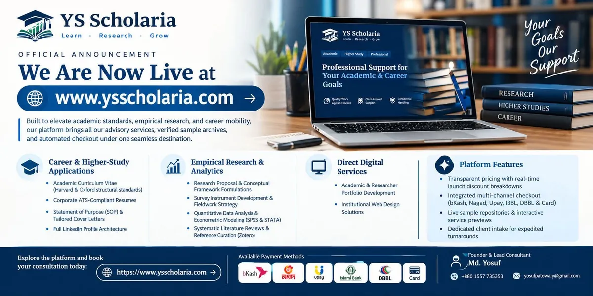

YS Scholaria
An academic and career service for students and professionals in Bangladesh, founded and led by Md. Yosuf.
YS Scholaria helps students, researchers and professionals move forward with clear CVs, sound research and practical digital tools. Md. Yosuf founded it and is its lead consultant. Its own website carries the full service list, samples and pricing.
Services
Career services
Documents for jobs and applications.
- CV and résumé writing: student, professional, ATS and academic CVs
- Cover letters that connect the candidate to the role
- LinkedIn optimisation: headline, About section and experience
- Statement of purpose writing and editing
Academic and research services
Support from first idea to finished text.
- Complete thesis consultation: structure, framework and citation guidance
- Research proposal support, from idea to a complete proposal
- Survey instrument development and fieldwork strategy
- Quantitative data analysis in SPSS and Stata, with plain-language results
- Research report writing, academic and business
More services
Study support and a web presence.
- Higher-study support, quoted by scope
- Website design: portfolio or service websites, from brand to launch
- Free higher-study materials: IELTS, TOEFL, GRE, GMAT and PTE preparation, grammar and vocabulary, SOP help and CV templates
Full service list (opens in a new tab) Samples (opens in a new tab) Pricing (opens in a new tab)
How the work is done
- Original work only
- No fabricated data, citations or results.
- Terms agreed first
- Scope, price and timeline are agreed before work begins.
- Confidential handling
- Client work is handled in confidence.
Now live

The founder
Md. Yosuf holds a BSS in Economics from Govt. Titumir College, University of Dhaka. He has prepared more than 50 CVs over four years and teaches research and data analysis in SPSS.
His research record, including two peer-reviewed articles published in 2026 and work as a research assistant on SSRC, BMRC and ARI-BUET projects, is documented on this site: see Publications, Experience and Expertise.
YS Scholaria is an independent service and is not affiliated with any university, journal, government body or research organisation.
Get in touch
Questions about CVs, research or data analysis? Write to Md. Yosuf or start on the YS Scholaria site.
Email ysscholaria.com (opens in a new tab)